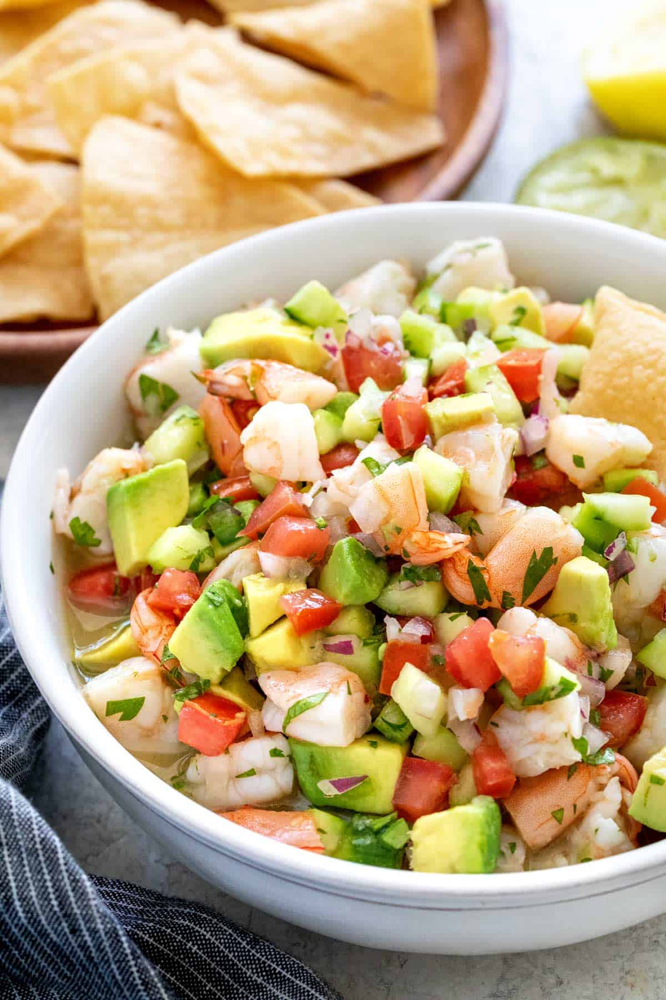

Ceviche

Mexicos Finest Seafood
Ceviche is a blend of spicy and lemon flavor seafood. With a blend of cucumber and other vegtables
Ingredients
- Shrimp: I like to use medium shrimp and dice it small so everthing is more uniform in size.
- Limes: You'll need about two lemons
- Roma tomatoes: Other varieties of fresh garden grown tomatoes would be extra delicious too.
- Red Onions: Yellow onion may be substitued if needed.
- Clinantro: Feel free to add more to taste, or cut back a little for a milder flavor.
- Jalapeno: If you like it less spicy remove the seeds.
- Salt and pepper: Adds to taste
- Cucumber: Optional but adds a nice crunch.
- Avacodo: Not always included but i think its a must.
Steps
- Boil water in pot, fill bowl of ice water: Bring a pot of water to a boil. Meanwhile, fill up a medium bowl with ice water, set aside.
- Cook shrimp: Add shrimp to boiling water and let cook just until pink and opaque, about 1 minute.
- Drain, chill and chop shrimp: Drain shrimp in a colander then transfer to ice water to cool for a few minutes. Drain well then chop shrimp into small pieces (about 1/2-inch).
- Toss shrimp with fresh ingredients: In a medium bowl (you can use the same bowl) combine shrimp, lime juice, lemon juice, tomatoes, onion, cilantro, jalapeno pepper and season with salt and pepper to taste.
- Marinate: Transfer to refrigerator and let rest 1 hour
- Add last few ingredients: Toss in cucumber and avocado and serve. It’s delicious with tortilla chips or over tostada shells.
Homepage